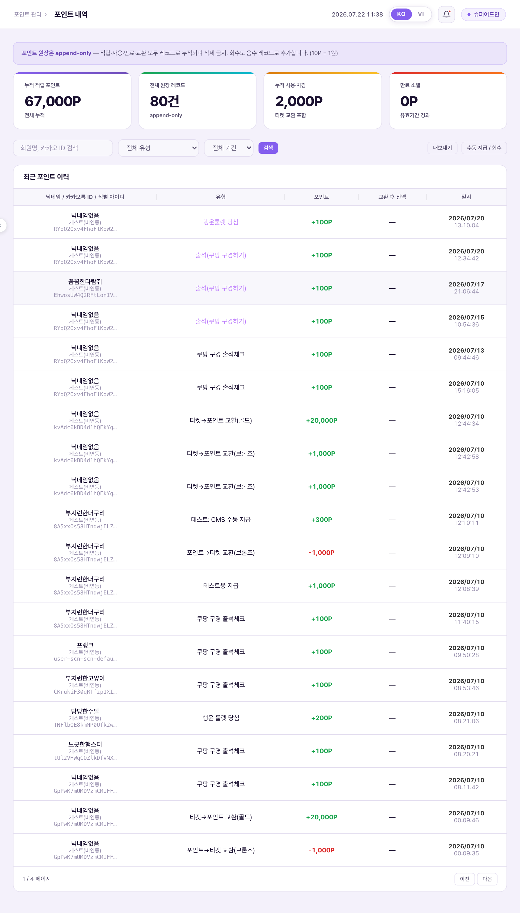
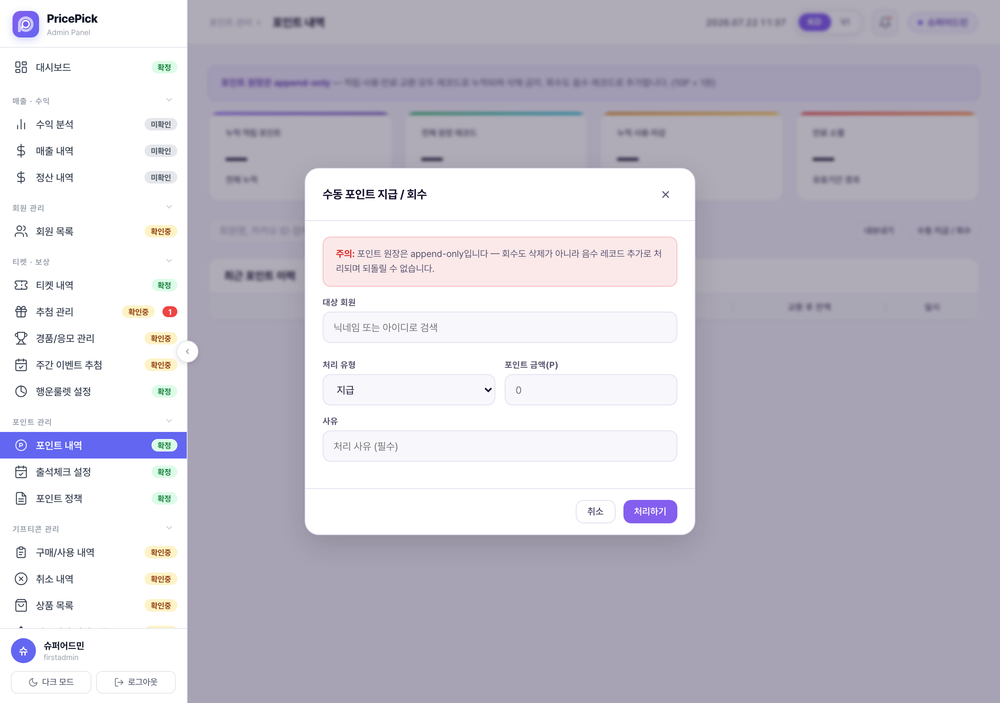

포인트 내역 = 모든 회원의 포인트 적립·사용·만료·교환 기록을 시간순으로 쌓아놓은 원장(레코드북)을 조회하는 화면. 포인트는 출석체크·친구초대·룰렛 등으로 자동 적립되지만, 오지급·오류 보정처럼 사람이 직접 개입해야 하는 상황을 위해 관리자가 수동으로 지급·회수할 수 있는 창구도 이 화면에 있다. 핵심 원칙은 append-only(추가만 가능, 삭제 불가) — 잘못 지급된 포인트도 지우지 않고, 마이너스(음수) 기록을 새로 쌓아 상쇄한다.Lịch sử điểm = màn tra cứu sổ cái ghi lại theo thời gian toàn bộ việc tích·dùng·hết hạn·đổi điểm của mọi hội viên. Điểm được tự động tích qua điểm danh·mời bạn·roulette, nhưng cũng có màn cấp phát·thu hồi thủ công dành cho các tình huống cần con người can thiệp trực tiếp như cấp nhầm·sửa lỗi. Nguyên tắc cốt lõi là append-only (chỉ được thêm, không được xóa) — kể cả điểm cấp nhầm cũng không xóa mà chỉ ghi thêm một dòng âm để bù trừ.

| 요소Thành phần | 의미Ý nghĩa | 바꾸면 생기는 일Điều gì xảy ra khi thay đổi |
|---|---|---|
| 누적 적립 포인트Điểm tích lũy | 전체 회원의 지금까지 적립된 포인트 총합(정보용 통계)Tổng điểm đã tích của tất cả hội viên (chỉ mang tính thống kê) | 직접 편집 불가. 새 적립 레코드가 생길 때마다 자동 증가Không chỉnh sửa trực tiếp được. Tự tăng mỗi khi có dòng tích điểm mới |
| 전체 원장 레코드Tổng số dòng sổ cái | append-only 레코드 총 건수(적립·사용·만료·교환·회수 전부 포함)Tổng số dòng append-only (gồm cả tích·dùng·hết hạn·đổi·thu hồi) | 삭제되는 레코드가 없어 이 숫자는 절대 줄어들지 않는다Không có dòng nào bị xóa nên con số này không bao giờ giảm |
| 누적 사용·차감Đã dùng·trừ lũy kế | 포인트→티켓 교환 등으로 소모된 포인트 총합Tổng điểm đã tiêu qua đổi điểm→vé, v.v. | 정보용. 회원이 교환할 때마다 자동 증가Chỉ mang tính thông tin. Tự tăng mỗi khi hội viên đổi điểm |
| 만료 소멸Hết hạn tiêu hủy | 유효기간(적립일+1년) 경과로 자동 소멸된 포인트 총합Tổng điểm đã tự động hết hạn (tích lũy + 1 năm) | 매일 새벽 만료 배치가 돌 때마다 갱신(정책서 근거: 포인트 만료 = 적립일+1년, FIFO)Cập nhật mỗi khi batch hết hạn chạy vào sáng sớm hằng ngày (căn cứ chính sách: điểm hết hạn = ngày tích + 1 năm, FIFO) |
| 유형 필터Bộ lọc loại | 9종 — 출석·친구초대·온보딩·룰렛당첨·티켓→포인트·관리자지급·포인트→티켓·만료소멸·관리자회수9 loại — điểm danh·mời bạn·onboarding·trúng roulette·vé→điểm·admin cấp·điểm→vé·hết hạn·admin thu hồi | 특정 유형만 골라보면 해당 지급 경로의 이상 유무를 빠르게 점검할 수 있음Chọn riêng một loại giúp kiểm tra nhanh bất thường của kênh cấp đó |
| 내보내기Xuất file | 현재 필터 조건의 이력을 파일로 내려받음Tải file lịch sử theo điều kiện lọc hiện tại | 회계·정산 대사 자료로 활용(정책서: 정산 데이터 5년 보관 원칙과 연결)Dùng làm tài liệu đối chiếu kế toán·quyết toán (liên quan nguyên tắc lưu dữ liệu quyết toán 5 năm) |

모달 상단에 실제로 노출되는 경고 문구를 그대로 옮기면: "주의: 포인트 원장은 append-only입니다 — 회수도 삭제가 아니라 음수 레코드 추가로 처리되며 되돌릴 수 없습니다." 입력 항목은 4개 — 대상 회원(닉네임/아이디 검색), 처리 유형(지급/회수), 포인트 금액(P), 사유(필수 입력).Nguyên văn cảnh báo hiển thị ở đầu modal: "Chú ý: sổ cái điểm là append-only — thu hồi cũng được xử lý bằng cách thêm dòng âm chứ không xóa, và không thể hoàn tác." Có 4 mục nhập — hội viên đối tượng (tìm theo nickname/ID), loại xử lý (cấp/thu hồi), số điểm (P), lý do (bắt buộc nhập).
| 요소Thành phần | 의미Ý nghĩa | 바꾸면 생기는 일Điều gì xảy ra khi thay đổi |
|---|---|---|
| 대상 회원Hội viên đối tượng | 지급/회수를 적용할 회원 1명1 hội viên sẽ được áp dụng cấp/thu hồi | 잘못된 회원을 선택하면 엉뚱한 사람에게 포인트가 들어감 — 회수 불가 원칙상 되돌리려면 반대 방향으로 새 레코드를 또 만들어야 함Chọn sai hội viên thì điểm vào nhầm người — vì nguyên tắc không xóa được, muốn sửa phải tạo thêm 1 dòng ngược lại |
| 처리 유형Loại xử lý | 지급(+) 또는 회수(-)Cấp (+) hoặc thu hồi (-) | 회수를 선택해도 원 레코드는 그대로 남고, 상쇄용 음수 레코드가 새로 추가될 뿐Dù chọn thu hồi, dòng gốc vẫn còn nguyên — chỉ có thêm 1 dòng âm để bù trừ |
| 포인트 금액(P)Số điểm (P) | 지급/회수할 포인트 수량Số điểm sẽ cấp/thu hồi | 10P=1원 기준(정책서 SoT)이므로 큰 금액을 잘못 입력하면 즉시 큰 폭의 잔액 변동이 생김Theo chuẩn 10P=1 won (SoT chính sách), nhập nhầm số lớn sẽ làm số dư biến động mạnh ngay lập tức |
| 사유(필수)Lý do (bắt buộc) | 처리 근거를 남기는 자유 텍스트Văn bản tự do ghi căn cứ xử lý | 비워두면 저장 자체가 안 됨 — 삭제가 불가능한 원장이라 사유 기록이 유일한 감사 근거Để trống thì không lưu được — vì sổ cái không thể xóa, lý do là căn cứ kiểm toán duy nhất |
관리자의 수동 회수나 만료 소멸도 전부 같은 방식이다 — "차감"이라는 동작은 있어도 "삭제"라는 동작은 이 화면 어디에도 없다. 그래서 특정 시점의 잔액을 구하려면 그 시점까지의 모든 레코드를 더해야 하며, 화면의 "교환 후 잔액" 컬럼은 그 계산 결과를 미리 보여주는 값이다(현재 데모 데이터에는 이 컬럼이 대부분 "—"로 비어 있어 실측 확인은 못함 — 확정 대기).Kể cả thu hồi thủ công hay hết hạn tiêu hủy của admin cũng theo cùng một cách — có hành động "trừ" nhưng không có hành động "xóa" ở đâu trong màn này. Vì vậy muốn biết số dư tại một thời điểm phải cộng tất cả các dòng đến thời điểm đó, và cột "Số dư sau đổi" trên màn hình là giá trị đã tính sẵn (dữ liệu demo hiện tại phần lớn cột này để trống "—" nên chưa xác minh được thực tế — đang chờ xác nhận).
| 상황Tình huống | 운영자가 하는 일Việc Vận hành viên làm | 결과Kết quả |
|---|---|---|
| 이벤트 버그로 과다 지급Cấp thừa do lỗi sự kiện | 수동 지급/회수 모달 → 대상 회원 검색 → 처리유형 "회수" → 과다분만큼 입력 → 사유에 원인 기재Modal cấp/thu hồi → tìm hội viên → chọn "thu hồi" → nhập đúng phần thừa → ghi nguyên nhân vào lý do | 음수 레코드 추가 → 잔액 정상화. 원래의 과다 지급 레코드는 그대로 남아 감사 시 추적 가능Thêm dòng âm → số dư về đúng. Dòng cấp thừa gốc vẫn còn để truy vết khi kiểm toán |
| 제휴몰 추적 실패 CS 보완Bổ sung CS do lỗi tracking đối tác | 회원의 출석 인정 실패 확인 → 수동 지급으로 100P 보완 → 사유에 "출석 미인정 CS 보완" 등 기재Xác nhận điểm danh không được ghi nhận → cấp thủ công 100P → ghi lý do "bổ sung CS do điểm danh lỗi" | 관리자지급 유형 레코드 생성, 원장에 남아 이후 대사 시 구분 가능Tạo dòng loại "admin cấp", còn lại trong sổ cái để phân biệt khi đối chiếu sau này |
| 특정 회원 문의 대응Xử lý thắc mắc của 1 hội viên | 닉네임/카카오ID로 검색 → 유형·기간 필터로 좁혀 흐름 확인Tìm theo nickname/ID Kakao → thu hẹp bằng bộ lọc loại·kỳ hạn để xem luồng | 해당 회원의 전체 포인트 이력을 append-only 순서 그대로 확인 가능Xem được toàn bộ lịch sử điểm của hội viên đó theo đúng thứ tự append-only |
현재 데모 데이터는 게스트(카카오 미연동) 계정 위주이며 "교환 후 잔액" 컬럼은 대부분 비어 있어(—) 실제 잔액 계산 로직까지는 이번 조사로 확인하지 못했다. 수동 지급/회수 모달의 저장 동작(실제 원장 반영)도 데모 훼손을 피하기 위해 이번 문서화 과정에서 실행하지 않았다 — 화면 구조와 경고 문구만 실측했다.Dữ liệu demo hiện tại chủ yếu là tài khoản khách (chưa liên kết Kakao), cột "Số dư sau đổi" phần lớn để trống (—) nên đợt khảo sát này chưa xác minh được logic tính số dư thực tế. Thao tác lưu của modal cấp/thu hồi thủ công (ghi thật vào sổ cái) cũng không được thực thi trong quá trình viết tài liệu này để tránh làm hỏng dữ liệu demo — chỉ đo thực tế cấu trúc màn hình và nội dung cảnh báo.